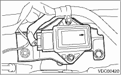

Install in the reverse order of removal.
NOTE:
Do not install the yaw rate & lateral G sensors facing an incorrect direction. There is an arrow mark on the sensor showing the front direction of the vehicle.
RHD model

LHD model
Tightening torque:
18 N·m (1.8 kgf-m, 13.0 ft-lb)
CAUTION:
Do not drop or bump the yaw rate & lateral G sensor. After installation, always make the following two settings.
• Steering angle sensor centering setting
• Yaw rate & lateral G sensor 0 point setting
These two procedures are required to make the VDCCM recognize what position the vehicle is in later. Refer to VDCCM Adjustments for procedures regarding the above settings.